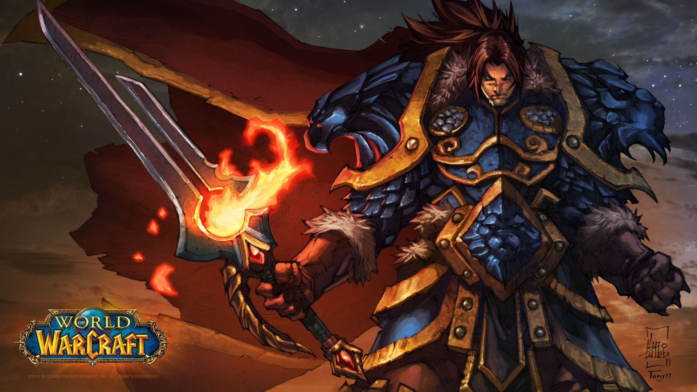
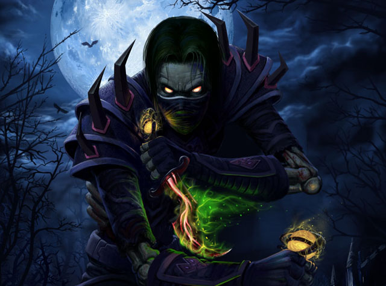
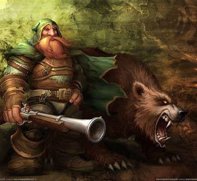
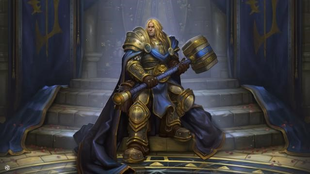
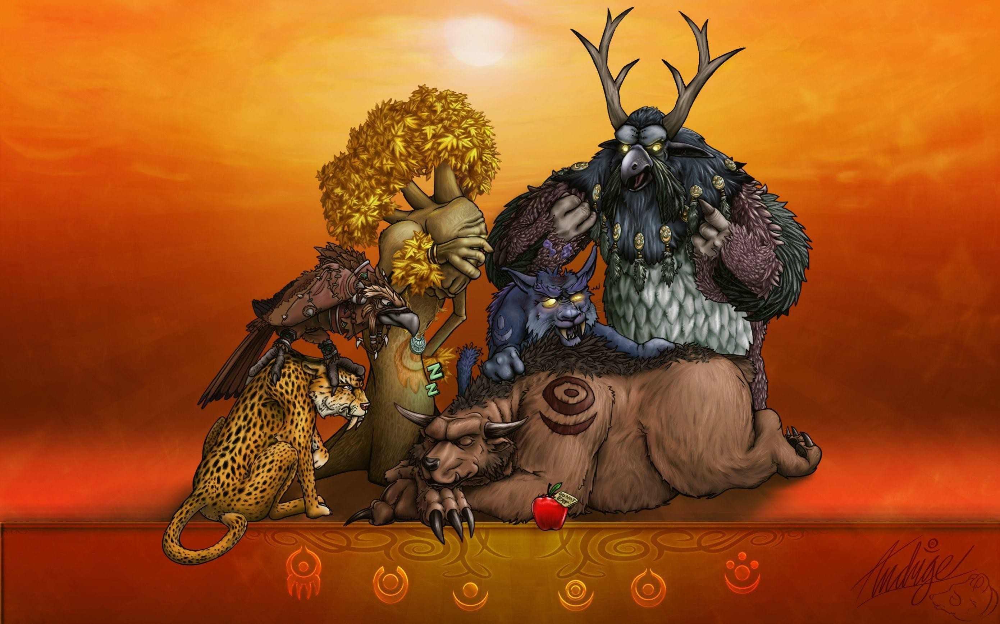
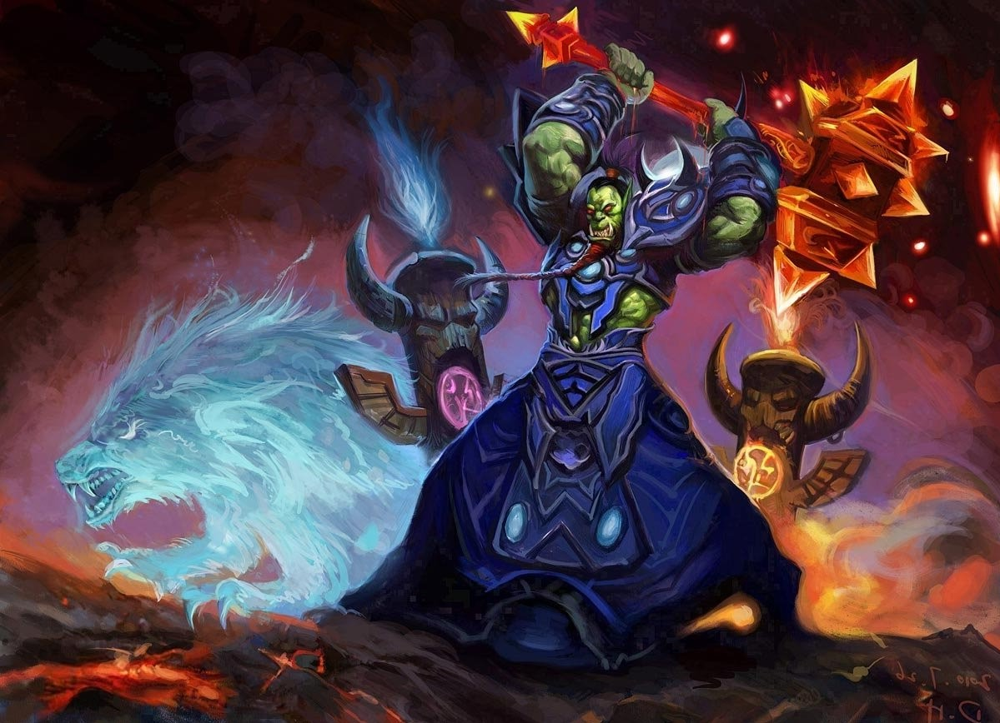
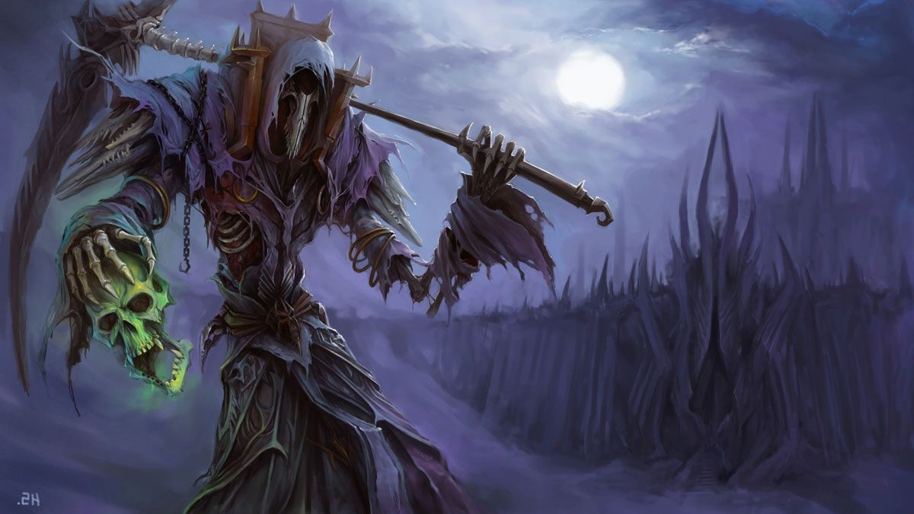
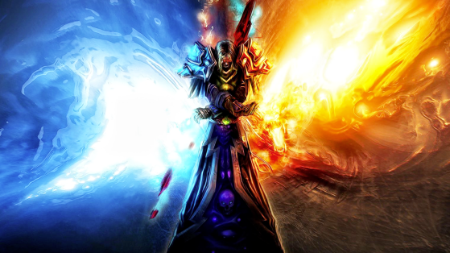
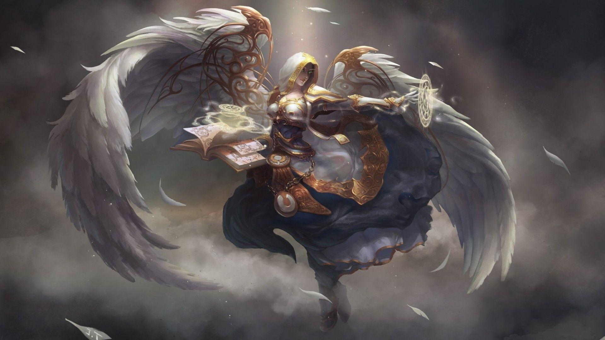

Guerreros
·Roles de combate: Tanque, Daño
·Recursos:Salud, Ira
·Tipo de armadura: Placa, Escudo
·Armas disponibles: Dagas, Armas de puño, Hachas, Mazas, Espadas, Armas de asta, Bastones
·Especializaciones: -Armas -Furia -Proteccion
Señores de la guerra.
Mientras ha durado la guerra, los héroes de cada raza han intentado dominar el arte de la batalla. Los guerreros combinan fuerza, liderazgo y un amplio conocimiento de armas y armaduras para crear el caos durante el glorioso combate. Algunos protegen desde las primeras líneas con escudos, bloqueando a los enemigos mientras los aliados apoyan a los guerreros desde detrás con hechizos y arcos. Otros renuncian al escudo y desatan su ira contra la amenaza más próxima con una variedad de armas mortales.
Los guerreros se equipan con cuidado para el combate y se enfrentan a sus enemigos de frente, dejando que los ataques resbalen contra su pesada armadura. Usan diversas tácticas de combate y una gran variedad de tipos de armas para proteger a los combatientes menos hábiles. Los guerreros deben controlar cuidadosamente su ira (el poder detrás de sus ataques más fuertes) para maximizar su efectividad en el combate
Pícaro
·Roles de combate:Daño
·Recursos:Salud, Energía, Puntos de combo
·Tipo de armadura:Cuero
·Armas disponibles Dagas, Armas de puño, Hachas de una mano, Mazas de una mano, Espadas de una mano
·Especializaciones: -Asesinato -Forajido -Sutileza
Rateros merodeadores.
Para los pícaros el único código es el contrato y su honor se compra con oro. Libres de las limitaciones de una conciencia, estos mercenarios se apoyan en tácticas brutales y eficientes. Asesinos letales y maestros del sigilo, se acercan a sus objetivos por detrás, perforando un órgano vital y desapareciendo entre las sombras antes de que la víctima caíga al suelo.
Los pícaros a menudo inician sus batallas entre las sombras, comenzando con sanguinarios golpes cuerpo a cuerpo. En batallas largas, usan ataques sucesivos, cuidadosamente seleccionados para preparar al enemigo para el golpe final. Los pícaros deben tener especial cuidado al seleccionar a sus objetivos para no malgastar sus ataques de combo y deben saber cuándo esconderse o huir si la batalla se vuelve contra ellos.
Cazador
·Roles de combate: Daño
·Recursos: Salud, Enfoque
·Tipo de armadura: Malla
·Armas disponibles Arcos, Ballestas, Armas de fuego, Armas de asta
·Especializaciones: -Bestias -Punteria -Supervivencia
Acechadores inevitables
Desde temprana edad, la llamada de la naturaleza atrae a algunos aventureros desde la comodidad de sus hogares hacia el implacable mundo primario. Aquellos que aguantan se convierten en cazadores. Maestros de su entorno, son capaces de escabullirse como fantasmas entre los árboles y poner trampas en el camino de sus enemigos.
Los cazadores luchan contra sus enemigos a distancia, ordenando a sus mascotas que ataquen mientras preparan sus flechas y recargan sus pistolas. Si bien sus armas de misiles son devastadoras a corta y larga distancia, los cazadores son también extremadamente ágiles. Son capaces de evitar o ralentizar a sus enemigos para recuperar su ventaja en la batalla.
Paladin
Roles de combate:Tanque, Sanación, Daño
·Recursos: Salud, Maná, Poder sagrado
·Tipo de armadura: Placa, Escudo
·Armas disponibles Hachas, Mazas, Espadas, Armas de asta
·Especializaciones: -Sagrado -Proteccion -Represion
Modelos de justicia
Esta es la llamada del paladín: proteger a los débiles, llevar la justicia a los injustos y eliminar el mal de los rincones más oscuros del mundo. Estos guerreros sagrados van equipados con armadura de placas para poder enfrentarse a los enemigos más duros y la bendición de la Luz les permite sanar heridas y, en algunos casos, incluso devolver la vida a los muertos.
Los paladines se colocan justo delante de sus enemigos, confiando en su pesada armadura y la sanación para poder sobrevivir a una lluvia de ataques. Ya sea con enormes escudos o con aplastantes armas a dos manos, los paladines pueden aguantar zarpas y espadas de sus compañeros más débiles, pero deben usar la magia sanadora con cuidado para asegurarse de que se mantienen en pie.
Druida
·Roles de combate:Tanque, Sanación, Daño
·Recursos: Salud, Maná, Ira, Energía, Poder astral
·Tipo de armadura:Cuero
·Armas disponibles Dagas, Armas de puño, Mazas, Armas de asta, Bastones
·Especializaciones: -Equilibrio -Feral -Restauracion
Feroces cambiantes de forma.
Los druidas controlan los enormes poderes de la naturaleza para mantener el equilibrio y proteger la vida. Con experiencia, los druidas pueden desatar la energía bruta de la naturaleza contra sus enemigos, lanzando una furia celestial sobre ellos desde muy lejos, atrapándolos con vides encantadas o frenándolos con ciclones implacables.
Los druidas poseen una gran variedad de estilos de combate. Pueden llevar a cabo todos los roles: sanación, tanque, daño cuerpo a cuerpo y daño a distancia. Es vital que los druidas adopten la forma adecuada para cada situación ya que cada forma conlleva un propósito diferente
Chaman
·Roles de combate:Sanación, Daño
·Recursos: Salud, Maná, Vorágine
·Tipo de armadura:Malla, Escudo
·Armas disponibles Dagas, Armas de puño, Hachas, Mazas, Bastones
·Especializaciones: -Elemental -Mejora -Restauracion
Adeptos de los elementos
Los chamanes son guías espirituales y practicantes no de lo divino, sino de los propios elementales. Al contrario que otros místicos, los chamanes comulgan con fuerzas que no son estrictamente benévolas. Los elementos son caóticos y si los dejan a su aire, luchan entre sí con una furia primaria sin fin. La labor del chamán es equilibrar ese caos. Actuando como moderadores entre la tierra, el fuego, el agua y el aire, los chamanes invocan tótems que concentran a los elementos para apoyar a los aliados del chamán o para castigar a quienes los amenazan.
Durante el combate, el chamán coloca totems de control y daño en el suelo para maximizar su efectividad y ponerle las cosas más difíciles a los enemigos Los chamanes son lo suficientemente versátiles para luchar contra los enemigos de cerca o a distancia, pero los chamanes sabios eligen su camino de ataque basado en los puntos fuertes y débiles de sus enemigos.
Brujo
·Roles de combate: Daño
·Recursos: Salud, Maná, Fragmentos de alma
·Tipo de armadura: Tela
·Armas disponibles: Dagas, Espadas de una mano, Bastones, Varitas
·Especializaciones: -Aflicciones -Demonologia -Destruccion
Canalizadores de poderes prohibidos
En el rostro del poder demoníaco, la mayoría de los héroes ven muerte. Los brujos solo ven oportunidad. La dominación es su objetivo y han encontrado un camino hacia él en las artes oscuras. Estos voraces hechiceros invocan esbirros demoníacos para que luchen a su lado. Al principio, solo controlan a los diablillos, pero a medida que el conocimiento del brujo se amplía, seductores súcubos, leales abisarios, y temibles manáfagos se unen a las filas de los hechiceros oscuros para causar estragos contra cualquiera que se interponga en el camino de su amo.
Los brujos incineran y destruyen a los enemigos debilitados con una combinación de atroces enfermedades y magia oscura. Mientras que sus mascotas les protegen y mejoran, los brujos golpean a los enemigos desde la distancia. Ya que son taumaturgos físicamente débiles desprovistos de una poderosa armadura, los brujos astutos dejan que sus esbirros se lleven el grueso de los ataques enemigos para salvar su propio pellejo.
Mago
Roles de combate: Daño
·Recursos: Salud, Maná
·Tipo de armadura: Tela
·Armas disponibles: Varitas, Dagas, Espadas de una mano, Bastones
·Especializaciones: -Arcano -Fuego -Escarcha
Maestros del tiempo y espacio
Los estudiantes dotados de un agudo intelecto y una disciplina férrea pueden recorrer el camino del mago. La magia arcana disponible para los magos es tanto magnífica como peligrosa y, por tanto, solo se les revela a los más devotos practicantes. Para evitar las interferencias con sus lanzamientos de hechizos, los magos solo llevan armaduras de tela, pero los escudos arcanos y los encantamientos les proporcionan protección adicional. Para mantener a los enemigos a raya, los magos pueden invocar ráfagas de fuego para incinerar a objetivos distantes y hacer que zonas enteras entren en erupción, prendiendo fuego a grupos de enemigos.
Los magos destruyen a sus enemigos con encantamientos arcanos. Aunque controlan poderosos hechizos ofensivos, los magos son frágiles y su armadura es ligera, lo que los hace particularmente vulnerables a los ataques a corta distancia. Los magos sabios usan sus hechizos con cuidado para mantener a sus enemigos a distancia o retenerlos en el lugar.
Sacerdote
·Roles de combate: Sanacion, Daño
·Recursos:Salud, Mana, Demencia
·Tipo de armadura: Tela
·Armas disponibles: Dagas, Mazas de una mano, Bastones, Varitas
·Especializaciones: -Disciplina -Sagrado -Sombra
Invocadores de luz y oscuridad
Los sacerdotes están entregados a lo espiritual y expresan su inquebrantable fe sirviendo a la gente. Durante milenios han dejado atrás los confines de sus templos y la comodidad de sus santuarios para apoyar a sus aliados en las tierras destrozadas por la guerra. En medio del terrible conflicto, ningún héroe cuestiona el valor de las órdenes de un sacerdote.
Los sacerdotes usan poderosa magia de sanación para asegurarse de que tanto ellos como sus compañeros no son derribados. También controlan poderosos hechizos ofensivos a distancia, pero pueden verse sobrepasados por los enemigos debido a su fragilidad física y a su ligera armadura. Los sacerdotes más experimentados combinan el uso de sus hechizos ofensivos y de control con la importancia de mantener vivo al resto del grupo.